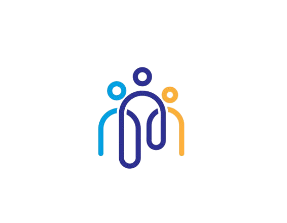

Herramienta Tecnológica para ayuda humanitaria y consentimiento social
El objetivo de esta página es netamente educativo y contribuir a la construcción de un mundo mejor. Nos esforzamos juntos como sociedad para convertirnos en un entorno dedicado al desarrollo de herramientas para la ayuda de otros.
